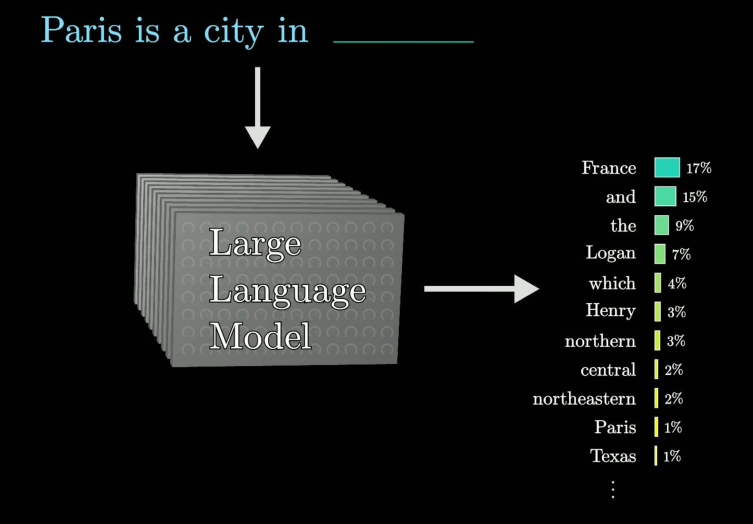

Aqui irei criar uma bullet list com diversos temas e tópicos que precisam ser abordados. É um rascunho ou uma promessa de coisas que podem ser debatidas.
LLMs de maneira bem abstrata são funções matemática extremamente complexas. Essa função recebem como entrada uma cadeia de caracteres/tokens e da como saída os tokens com maior probabilidade de completar a cadeia de entrada.

Dessa forma, essa função pode ser alimentada por um contexto específico e atuar como um agente de auxiliar, respondendo a perguntas feitas por um humano.